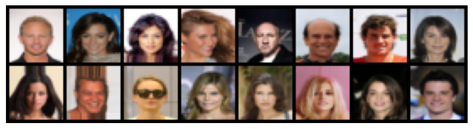
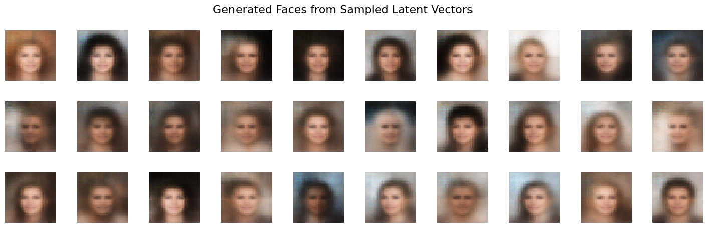

!pip install torch torchvision matplotlibFace Generation with Convolutional VAE
This notebook implements a convolutional variational autoencoder (VAE) trained on the CelebA face dataset using PyTorch.
It uses convolutional layers to encode and decode 64x64 face images, and demonstrates generation by sampling from the latent space.
# Enable autoreloading in Jupyter (if applicable)
%load_ext autoreload
%autoreload 2
# Core libraries
import numpy as np
import matplotlib.pyplot as plt
import pandas as pd
from scipy.stats import norm # Used for visualizing latent distributions
# PyTorch imports
import torch
import torch.nn as nn
import torch.nn.functional as F
import torch.optim as optim
from torch.utils.data import DataLoader, Dataset
import torchvision
from torchvision import transforms, utils# Hyperparameters
IMAGE_SIZE = 32 # Input image resolution (32x32)
CHANNELS = 3 # Number of color channels (RGB)
BATCH_SIZE = 128 # Batch size for training
NUM_FEATURES = 128 # Hidden layer size or intermediate feature size
Z_DIM = 200 # Dimensionality of the latent space
LEARNING_RATE = 5e-4 # Learning rate for optimizer
EPOCHS = 1 # Number of training epochs
BETA = 2000 # Weight for KL divergence term in loss (used in beta-VAE)0.1 Loading and Preprocessing the CelebA Dataset
from torchvision.datasets import CelebA
from torchvision import transforms
from torch.utils.data import DataLoader
# Transform pipeline: resize and convert to tensor
transform = transforms.Compose([
transforms.Resize((IMAGE_SIZE, IMAGE_SIZE)),
transforms.ToTensor()
])
# Load CelebA dataset
train_data = CelebA(
root="./data", # Where to download/save the data
split="train", # Options: "train", "valid", "test", or "all"
download=True, # Download if not already there
transform=transform
)
# DataLoader
train_loader = DataLoader(
train_data,
batch_size=BATCH_SIZE,
shuffle=True,
num_workers=2,
pin_memory=True
)
val_data = CelebA(
root="./data",
split="valid",
download=True,
transform=transform
)
val_loader = DataLoader(
val_data,
batch_size=BATCH_SIZE,
shuffle=False,
num_workers=2,
pin_memory=True
)0.2 Visualizing Training Data
def sample_batch(dataloader, num_samples=16):
"""
Sample one batch from the dataloader and return the first `num_samples` images.
"""
for images, _ in dataloader:
return images[:num_samples]import matplotlib.pyplot as plt
from torchvision.utils import make_grid
def display(images, cmap=None, nrow=8):
"""
Display a grid of images using matplotlib.
"""
grid = make_grid(images, nrow=nrow, padding=2, normalize=True)
np_img = grid.permute(1, 2, 0).cpu().numpy()
plt.figure(figsize=(10, 5))
plt.imshow(np_img, cmap=cmap)
plt.axis('off')
plt.show()train_sample = sample_batch(train_loader, num_samples=16)
display(train_sample)
0.3 Reparameterization Trick
def reparameterize(z_mean, z_log_var):
"""
Reparameterization trick: z = mu + sigma * epsilon
where epsilon ~ N(0, I)
"""
std = torch.exp(0.5 * z_log_var)
eps = torch.randn_like(std)
return z_mean + eps * std0.4 Encoder
class Encoder(nn.Module):
def __init__(self, z_dim):
super().__init__()
self.conv = nn.Sequential(
nn.Conv2d(CHANNELS, NUM_FEATURES, kernel_size=3, stride=2, padding=1), # 32 → 16
nn.BatchNorm2d(NUM_FEATURES),
nn.LeakyReLU(),
nn.Conv2d(NUM_FEATURES, NUM_FEATURES, kernel_size=3, stride=2, padding=1), # 16 → 8
nn.BatchNorm2d(NUM_FEATURES),
nn.LeakyReLU(),
nn.Conv2d(NUM_FEATURES, NUM_FEATURES, kernel_size=3, stride=2, padding=1), # 8 → 4
nn.BatchNorm2d(NUM_FEATURES),
nn.LeakyReLU(),
nn.Conv2d(NUM_FEATURES, NUM_FEATURES, kernel_size=3, stride=2, padding=1), # 4 → 2
nn.BatchNorm2d(NUM_FEATURES),
nn.LeakyReLU(),
)
self.flatten = nn.Flatten()
self.feature_shape = (NUM_FEATURES, IMAGE_SIZE // 16, IMAGE_SIZE // 16)
self.flat_dim = NUM_FEATURES * (IMAGE_SIZE // 16) ** 2
self.fc_mu = nn.Linear(self.flat_dim, z_dim)
self.fc_logvar = nn.Linear(self.flat_dim, z_dim)
def forward(self, x):
x = self.conv(x)
x_flat = self.flatten(x)
mu = self.fc_mu(x_flat)
logvar = self.fc_logvar(x_flat)
return mu, logvar1 Decoder
class Decoder(nn.Module):
def __init__(self, z_dim):
super().__init__()
self.feature_shape = (NUM_FEATURES, IMAGE_SIZE // 16, IMAGE_SIZE // 16)
self.fc = nn.Sequential(
nn.Linear(z_dim, np.prod(self.feature_shape)),
nn.BatchNorm1d(np.prod(self.feature_shape)),
nn.LeakyReLU()
)
self.deconv = nn.Sequential(
nn.ConvTranspose2d(NUM_FEATURES, NUM_FEATURES, kernel_size=3, stride=2, padding=1, output_padding=1),
nn.BatchNorm2d(NUM_FEATURES),
nn.LeakyReLU(),
nn.ConvTranspose2d(NUM_FEATURES, NUM_FEATURES, kernel_size=3, stride=2, padding=1, output_padding=1),
nn.BatchNorm2d(NUM_FEATURES),
nn.LeakyReLU(),
nn.ConvTranspose2d(NUM_FEATURES, NUM_FEATURES, kernel_size=3, stride=2, padding=1, output_padding=1),
nn.BatchNorm2d(NUM_FEATURES),
nn.LeakyReLU(),
nn.ConvTranspose2d(NUM_FEATURES, NUM_FEATURES, kernel_size=3, stride=2, padding=1, output_padding=1),
nn.BatchNorm2d(NUM_FEATURES),
nn.LeakyReLU(),
nn.ConvTranspose2d(NUM_FEATURES, CHANNELS, kernel_size=3, stride=1, padding=1),
nn.Sigmoid()
)
def forward(self, z):
x = self.fc(z)
x = x.view(-1, *self.feature_shape)
x = self.deconv(x)
return x1.1 VAE Model Wrapper: Encoder, Reparameterization, and Decoder
class VAE(nn.Module):
def __init__(self, encoder, decoder):
super().__init__()
self.encoder = encoder
self.decoder = decoder
def reparameterize(self, mu, logvar):
"""
z = mu + sigma * epsilon
where epsilon ~ N(0, I)
"""
std = torch.exp(0.5 * logvar)
eps = torch.randn_like(std)
return mu + eps * std
def forward(self, x):
"""
Forward pass:
- Encode input to get mu and logvar
- Sample z using reparameterization trick
- Decode z to reconstruct image
"""
mu, logvar = self.encoder(x)
z = self.reparameterize(mu, logvar)
x_recon = self.decoder(z)
return x_recon, mu, logvar1.2 VAE Loss
def vae_loss(x, x_recon, mu, logvar, beta=BETA):
"""
VAE loss = beta * reconstruction loss (MSE) + KL divergence
"""
# Reconstruction loss (MSE)
recon_loss = F.mse_loss(x_recon, x, reduction='mean') * beta
# KL divergence between q(z|x) and N(0, I)
kl_loss = -0.5 * torch.sum(1 + logvar - mu.pow(2) - logvar.exp())
kl_loss = kl_loss / x.size(0) # average over batch
return recon_loss + kl_loss, recon_loss, kl_loss1.3 Generating and Saving Sample Images from the Latent Space
from torchvision.utils import save_image
import os
def generate_images(model, epoch, z_dim, num_img=8, path="./output"):
"""
Generate and save images from random latent vectors after each epoch.
"""
os.makedirs(path, exist_ok=True)
model.eval()
z = torch.randn(num_img, z_dim).to(next(model.parameters()).device)
with torch.no_grad():
generated = model.decoder(z)
for i in range(num_img):
save_image(generated[i], f"{path}/generated_img_{epoch:03d}_{i}.png")1.4 Save Checkpoint
def save_checkpoint(model, epoch, loss, best_loss, path="./checkpoint.pt"):
if loss < best_loss:
print(f"Saving new best model at epoch {epoch} with loss {loss:.4f}")
torch.save(model.state_dict(), path)
return loss
return best_loss1.5 Training Step
def train_step(model, dataloader, optimizer, device):
model.train()
total_loss = 0
total_recon = 0
total_kl = 0
for batch in dataloader:
x, _ = batch if isinstance(batch, (tuple, list)) else (batch, None)
x = x.to(device)
optimizer.zero_grad()
x_recon, mu, logvar = model(x)
loss, recon_loss, kl_loss = vae_loss(x, x_recon, mu, logvar)
loss.backward()
optimizer.step()
total_loss += loss.item()
total_recon += recon_loss.item()
total_kl += kl_loss.item()
num_batches = len(dataloader)
return {
"loss": total_loss / num_batches,
"reconstruction_loss": total_recon / num_batches,
"kl_loss": total_kl / num_batches
}1.6 Validation Step
@torch.no_grad()
def validate_epoch(model, dataloader, device):
model.eval()
total_loss = 0
total_recon = 0
total_kl = 0
for batch in dataloader:
x, _ = batch if isinstance(batch, (tuple, list)) else (batch, None)
x = x.to(device)
x_recon, mu, logvar = model(x)
loss, recon_loss, kl_loss = vae_loss(x, x_recon, mu, logvar)
total_loss += loss.item()
total_recon += recon_loss.item()
total_kl += kl_loss.item()
num_batches = len(dataloader)
return {
"loss": total_loss / num_batches,
"reconstruction_loss": total_recon / num_batches,
"kl_loss": total_kl / num_batches
}1.7 Instantiate model, optimizer, writer, device
from torch.utils.tensorboard import SummaryWriter
device = torch.device("cuda" if torch.cuda.is_available() else "cpu")
encoder = Encoder(z_dim=Z_DIM)
decoder = Decoder(z_dim=Z_DIM)
vae = VAE(encoder, decoder).to(device)
optimizer = optim.Adam(vae.parameters(), lr=LEARNING_RATE)
writer = SummaryWriter(log_dir="./logs")1.8 Training the VAE Model
best_loss = float("inf")
for epoch in range(EPOCHS):
train_logs = train_step(vae, train_loader, optimizer, device)
val_logs = validate_epoch(vae, val_loader, device)
print(f"Epoch {epoch+1:02d} | "
f"Train Loss: {train_logs['loss']:.4f} | "
f"Val Loss: {val_logs['loss']:.4f}")
# Save best model
best_loss = save_checkpoint(vae, epoch, val_logs["loss"], best_loss)
# Generate and save sample images
generate_images(vae, epoch, Z_DIM)
# Log to TensorBoard
writer.add_scalar("Loss/train", train_logs["loss"], epoch)
writer.add_scalar("Loss/val", val_logs["loss"], epoch)
writer.add_scalar("KL/train", train_logs["kl_loss"], epoch)
writer.add_scalar("Recon/train", train_logs["reconstruction_loss"], epoch)Epoch 01 | Train Loss: 72.4671 | Val Loss: 58.4050
Saving new best model at epoch 0 with loss 58.40501.9 Reconstruct using the variational autoencoder
# Select a batch of images from the training set
example_images, _ = next(iter(train_loader)) # Ignore labels
example_images = example_images[:8].to(device) # Select first 8 images
# Set model to evaluation mode
vae.eval()
# Forward pass through the VAE to get reconstructions
with torch.no_grad():
reconstructions, _, _ = vae(example_images)
# Move tensors to CPU for display
example_images = example_images.cpu()
reconstructions = reconstructions.cpu()
# Display original images
print("Example real faces")
display(example_images)
# Display reconstructed images
print("Reconstructions")
display(reconstructions)Example real facesReconstructions1.10 Generate New Faces
import numpy as np
import matplotlib.pyplot as plt
# Sample latent vectors from standard normal distribution
grid_width, grid_height = 10, 3
num_samples = grid_width * grid_height
z_sample = torch.randn(num_samples, Z_DIM).to(device)
# Decode to generate new faces
vae.eval()
with torch.no_grad():
generated_faces = vae.decoder(z_sample).cpu() # Shape: [N, C, H, W]
# Plot grid of generated images
fig = plt.figure(figsize=(18, 5))
fig.subplots_adjust(hspace=0.4, wspace=0.4)
for i in range(num_samples):
ax = fig.add_subplot(grid_height, grid_width, i + 1)
ax.axis("off")
img = generated_faces[i].permute(1, 2, 0).numpy() # CHW → HWC
ax.imshow(img)
plt.suptitle("Generated Faces from Sampled Latent Vectors", fontsize=16)
plt.show()